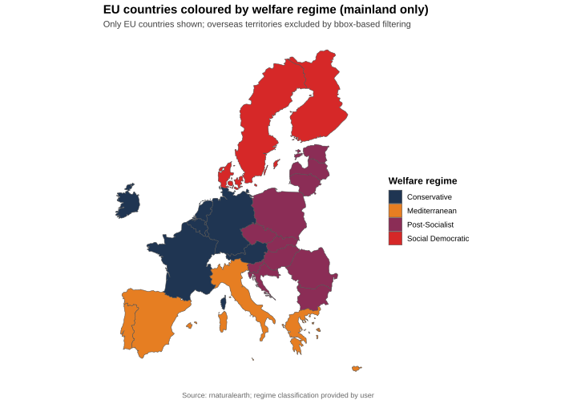

How gendered political polarization looks inside Europe’s Gen Z
A public, English-language companion to my master’s thesis on the new cultural divide between young women and young men across the EU27.
Every chart below is an interactive version of a thesis figure: hover to read exact values and 95% confidence intervals, click a legend entry to hide a series, or use the mode bar to zoom and download a PNG.
Where young Europeans stand on left and right
The classic political axis. For each generation, the average party position of respondents (female vs male) on the CHES left–right scale, where higher values mean placement toward the right. This is the dimension most often discussed when people talk about “young men turning conservative”.
Left–Right ideology by generation and gender
What it meansFor the Silent Generation and Baby Boomers the two gender lines are almost on top of each other. Starting with Gen X and even more with Millennials they begin to separate, and with Gen Z the gap widens sharply: young women drift to the left while young men remain noticeably to the right.
How to read itMean CHES left–right position, Female (red) vs Male (blue), by generation, with 95% CI ribbons. Pooled EU27, n = 36,082. Higher y = right, lower y = left.
The left–right gender gap, generation by generation
What it meansThe Gen Z bar is about 1.8× the Millennial one. A left–right gap has always existed, but it has become clearly larger with the youngest cohort rather than stabilising.
How to read itBar height = absolute gap |Female − Male| in mean left–right position, per generation. The dashed line is an anchored exponential fit, for visual guidance only.
Left–right ideology by year of birth
What it meansThe same picture at higher resolution: the two lines move together for respondents born before the late 1980s, then split after about 1990. That is the point the thesis identifies as the emergence of a modern gender gap, following Inglehart & Norris (2000) and Giger (2009).
How to read itSmoothed mean left–right position by year of birth, female vs male, with centered five-year rolling windows and 95% CI ribbons. Higher y = right.
The left–right gender gap by year of birth
What it meansFrom the 1950s cohorts to the late 1980s the gap stays under about 0.3 points — a period Giger calls “gender dealignment”. From roughly 1990 onwards the curve bends upward: this is the signature of the modern gender gap.
How to read itAbsolute gap |Female − Male| in mean left–right position by year of birth, with loess-smoothed trend. Larger y = wider gap.
The real fault line: postmaterialist vs traditional values
The thesis argues that the sharpest gendered divide inside Gen Z is not on left–right, but on the cultural axis that runs from postmaterialist values (environment, minority rights, civil liberties) to traditional values (order, authority, traditional morality). Here higher values mean more traditional, lower values more postmaterialist.
Postmaterialist–Traditional values by generation and gender
What it meansTwo trajectories moving in opposite directions. Women become progressively more postmaterialist as we move from older to younger generations: Gen Z women are more progressive than Millennial women, who are in turn more progressive than Gen X women. Men do not follow the same path: Gen Z men reverse the previous male trend and swing back toward the traditional pole. This is what the thesis calls the “flip” that produces a cultural divide rather than a simple generational shift.
How to read itMean CHES GAL–TAN position, Female (red) vs Male (blue), by generation, with 95% CI ribbons. Higher y = more traditional; lower y = more postmaterialist.
The cultural-values gender gap, generation by generation
What it meansThis is where the divide is largest. The Gen Z bar is about 2.1× the Millennial one, roughly three times the Gen X gap, and more than five times the Baby Boomer gap. Across the three dimensions examined in the thesis, the cultural axis is where the generational growth of the gender gap is most striking.
How to read itBar height = absolute gap |Female − Male| in GAL–TAN means, per generation.
Cultural values by year of birth
What it meansFor cohorts born up to the late 1980s the two lines essentially overlap. From 1990 onwards the female line bends downward (more postmaterialist) while the male line bends upward (more traditional): the two trajectories diverge like a pair of scissors opening.
How to read itSmoothed GAL–TAN means by year of birth, female vs male, centered five-year rolling windows with 95% CI ribbons. Higher y = more traditional.
The cultural-values gender gap by year of birth
What it meansThe smoothed curve stays close to zero through most of the 20th century and lifts off only for cohorts born in the 1990s and 2000s. The thesis takeaway: if you want to see where a new cultural divide is forming, look here first.
How to read itAbsolute gap |Female − Male| in GAL–TAN means by year of birth, with loess-smoothed trend. Larger y = wider cultural-values gap.
Women’s rights: a generational flip
The CHES women’s-rights item measures how supportive a party is of expanding women’s rights. Lower values mean more supportive, higher values less supportive.
Support for women’s rights by generation and gender
What it meansAcross older generations the male and female lines move almost in parallel. With Gen Z the balance is broken: young men drop in support for women’s rights while young women pull in the opposite direction.
How to read itMean party position on the CHES women’s-rights item, female vs male, by generation, with 95% CI ribbons. Lower y = more supportive of women’s rights; higher y = less supportive.
The women’s-rights gender gap, generation by generation
What it meansThe gap between young women and young men on women’s rights is about 2.5× larger for Gen Z than for Millennials. Together with the cultural-values panel above, this is what makes the Gen Z divide qualitatively different, not just “more of the same”.
How to read itBar height = absolute gap |Female − Male| in women’s-rights means, per generation.
Support for women’s rights by year of birth
What it meansThe smoothed curves are remarkably flat until about birth year 1990. Then the male line begins to climb (less supportive) while the female line bends down (more supportive). The break is visible to the naked eye.
How to read itSmoothed women’s-rights means by year of birth, female vs male, centered five-year rolling windows with 95% CI ribbons. Lower y = more supportive of women’s rights.
The women’s-rights gender gap by year of birth
What it meansLeft–right, cultural values, and women’s rights all tell the same story: a stable low gap for cohorts born before 1990, then a rapid opening. It is the convergence of evidence across dimensions that makes the thesis treat this as a real cleavage rather than a statistical artefact.
How to read itAbsolute gap |Female − Male| in women’s-rights means by year of birth, with loess-smoothed trend. Larger y = wider gap.
Who ends up at the political extremes
Averages can hide polarization: a generation can have a centrist mean while being internally split between two poles. Here respondents are re-classified as strongly progressive (CHES ≤ 2.5) or strongly traditional (CHES ≥ 7.5) on the postmaterialist–traditional axis. We first look at how many people sit at either pole in each generation, then split the picture by gender, and finally track how the balance moves across generational transitions.
How many young Europeans actually sit at the poles
What it meansThe share of respondents whose preferred party sits at one of the two cultural extremes climbs almost linearly with each new generation: from about 31% among the Silent Generation to roughly 50% in Gen Z. Half of Gen Z is choosing parties that experts code as either strongly progressive or strongly traditional — the centre is no longer where most young Europeans land.
How to read itOne dot per generation. The y-value is the combined share of respondents whose linked party scores ≤ 2.5 (strongly progressive) or ≥ 7.5 (strongly traditional) on the CHES postmaterialist–traditional scale. Pooled EU27, n ≈ 36,300. Genders are aggregated here.
Strongly progressive vs strongly traditional, by gender
What it meansSplitting the same data by gender shows where the symmetry breaks. Up to the Millennials, women and men move in lockstep on both poles. In Gen Z the lines cross: the share of women on the strongly progressive pole jumps to about 25% while their traditional share stays flat; men do the opposite — their progressive share stalls at 22% and their traditional share rises to 28%. That asymmetry is what the rest of the section unpacks.
How to read itFour lines per generation. Light purple = strongly progressive (CHES ≤ 2.5), dark purple = strongly traditional (CHES ≥ 7.5). Solid = women, dashed = men. Each y-value is the share within that generation × gender cell. Pooled EU27.
How the balance of extremes moves across generations
What it meansEach dot is one generational transition: how much a new generation shifts the balance between progressive and traditional extremes, in percentage points. Women (red) and men (blue) broadly moved in the same direction until Gen X, both becoming much more progressive in the Gen X → Millennials step. In the Millennials → Gen Z step the two lines diverge sharply: women stay in progressive territory, men swing back toward the traditional pole. The green vertical segments show the size of that gap at each transition.
How to read itEach dot = change in the progressive−traditional balance (% strongly progressive − % strongly traditional) across one generational transition, in percentage points. Red = female shift, blue = male shift, green segment = |female shift − male shift|. Pooled EU27.
Gender Divergence in Change (GDC) index
What it meansThe GDC index condenses the previous chart into a single number per transition: the absolute distance between the female and male generational shifts. The Millennials → Gen Z bar stands out: 9.2 percentage points, against 0.6 for the immediately preceding Gen X → Millennials transition. That is an order of magnitude larger than any other generational step measured here.
How to read itEach bar = GDC index for one generational transition, where GDC = |female change − male change| in percentage points. Taller bar = more divergent female vs male generational movement. Pooled EU27.
Four Europes, four gender gaps
The gap is not equally wide everywhere. Four welfare–regime families — Social Democratic, Conservative, Mediterranean and Post-Socialist — tell four different stories about where young women and young men are actually landing. Pick a regime to see its own generational trajectory, then compare across regimes in the charts below.
Welfare regimes as analytical contexts

What it meansEurope is not a single case. Each of the four regime families has its own distinctive mix of gender norms, labour-market structures, family policies and party systems, so it is plausible that a gendered Gen Z divide shows up differently in each. That is exactly what the charts below reveal — same generation, four different gender stories.
How to read itEU27 member states coloured by welfare-regime family: Social Democratic (Nordic), Conservative (continental Western Europe), Mediterranean (southern Europe), Post-Socialist (Central and Eastern Europe). The grouping follows the standard welfare-state typology used in comparative research and does not imply that countries inside a group are identical.
Cultural values by generation and gender — Conservative
What it meansLoading…
How to read itMean GAL–TAN position for each generation in the selected regime, female (red) vs male (blue), with 95% CI ribbons. Higher y = more traditional; lower y = more postmaterialist. Click one of the regime buttons above to swap the chart. Sources: EES 2024, ESS 2023–2024, CHES 2024.
Gen Z means by welfare regime
What it meansLoading…
How to read itGrouped bars: each regime has a red bar (Gen Z female mean) and a navy bar (Gen Z male mean) on the GAL–TAN scale. Hover a bar for the exact value. Higher bar = that group is more traditional on average.
Absolute Gen Z gender gap by regime
What it meansLoading…
How to read itBar height = |Female mean − Male mean| among Gen Z in that regime. Larger bar = wider gender split today, regardless of how the regime got there.
Gender Divergence in Change (GDC) index by regime
What it meansLoading…
How to read itBar height = GDC index for the Millennials → Gen Z transition in that regime, in percentage points. GDC shifts attention from level differences to generational movement: how differently women and men change in the balance between progressive and traditional extremes. Taller bar = more divergent female vs male trajectory.
What explains the divide
Once the gap is mapped, the thesis asks who inside Gen Z drives it. A standardized regression isolates how five individual-level factors — economic difficulty, education, place of residence, parental origin and religious attendance — reshape the gender gap on the cultural axis. The model is GAL–TAN ~ female + predictors(z) + female × predictors(z): each interaction tells you how much one extra standard deviation of a predictor moves women relative to men.
Gen Z gender gap — standardized interaction effects
Coefficients from y = CHES ~ female + predictors(z) + female × predictors(z).
| Predictor | Coeff | CI 2.5% | CI 97.5% | Std. Err. | p-value |
|---|---|---|---|---|---|
| Female (baseline gap) | −0.5277 | −0.7107 | −0.3447 | 0.0933 | <0.001 |
| Economic difficulty (z) | −0.2232 | −0.4101 | −0.0364 | 0.0953 | 0.019 |
| Education (z) | −0.1054 | −0.2944 | 0.0836 | 0.0964 | 0.274 |
| Place of residence (z) | −0.0725 | −0.2551 | 0.1101 | 0.0931 | 0.436 |
| Religious attendance (z) | +0.2419 | 0.0560 | 0.4278 | 0.0948 | 0.011 |
| Parental origin (z) | +0.2642 | 0.0805 | 0.4479 | 0.0937 | 0.005 |
Highlighted rows are statistically significant (p < 0.05).
What it means The first row sets the scene: holding everything else constant, young women in Gen Z sit 0.53 GAL–TAN points to the postmaterialist side of young men (p < 0.001). The other rows tell you how that baseline gap moves when one specific predictor goes up by one standard deviation. Three factors move it in a statistically significant way. Economic difficulty widens the gap (−0.22, p = 0.019): when material hardship is higher, women drift further from men. Religious attendance narrows it (+0.24, p = 0.011) and parental origin narrows it the most (+0.26, p = 0.005): more religiosity or a foreign-born parent pulls young women back closer to young men on the cultural axis. Education and place of residence are not significant (p = 0.274 and p = 0.436). The takeaway matches the thesis: the modern divide is driven less by where people live or how long they studied, and more by the cultural and economic worlds Gen Z women and men actually inhabit.
How to read it Each row is one term in the regression. Coeff is the standardized estimate (in GAL–TAN units per one standard deviation of the predictor). CI 2.5% and CI 97.5% are the lower and upper bounds of the 95% confidence interval. Std. Err. is the standard error of the coefficient. p-value reports the probability of seeing a coefficient that large under the null. A confidence interval that does not cross zero is statistically significant. Negative coefficients widen the female–male gap; positive coefficients narrow it. Sources: EES 2024 + ESS 2023–2024 + CHES 2024, standardized regression on Gen Z respondents.
Method in brief
The thesis harmonizes respondents from the European Social Survey (ESS, fieldwork 2023–2024) and the European Election Study (EES, fieldwork 2024) and links each respondent to the position of their supported party in the Chapel Hill Expert Survey (CHES, 2024). This produces consistent scores on three dimensions — left–right, postmaterialist–traditional, and support for women’s rights.
Year-of-birth trends are smoothed with centered five-year rolling windows to stabilise estimates. Generational categories run from the Silent Generation through Gen Z. Extreme party positions are trimmed to reduce outlier influence, and sensitivity checks confirm that substantive conclusions remain robust. Pooled EU27 sample, n ≈ 36,000 depending on the dimension.
APA references
The figures and commentary on this page are based on the thesis itself, on the final analysis outputs, and on the data sources cited in the dissertation.
- European Social Survey European Research Infrastructure (ESS ERIC). (2025). ESS round 11 - 2023. Social inequalities in health, Gender in contemporary Europe. Sikt - Norwegian Agency for Shared Services in Education and Research. https://doi.org/10.21338/ess11-2023
- Popa, S. A., Hobolt, S. B., Van der Brug, W., Katsanidou, A., Gattermann, K., Sorace, M., Toygur, I., & De Vreese, C. (2024). European Parliament Election Study 2024, voter study (ZA8868; Version 1.0.0) [Data set]. GESIS, Cologne. https://doi.org/10.4232/1.14409
- Rovny, J., Bakker, R., Hooghe, L., Jolly, S., Marks, G., Polk, J., Steenbergen, M., & Vachudova, M. (2025). 25 years of political party positions in Europe: The Chapel Hill Expert Survey, 1999-2024 [Working paper].
- Esping-Andersen, G. (1989). The three political economies of the welfare state. Canadian Review of Sociology/Revue canadienne de sociologie, 26(1), 10-36. https://doi.org/10.1111/j.1755-618X.1989.tb00411.x
- Ferrera, M. (1996). Il modello sud-europeo di welfare state. Italian Political Science Review/Rivista Italiana di Scienza Politica, 26(1), 67-101. https://doi.org/10.1017/S0048840200024047
- Inglehart, R., & Norris, P. (2000). The developmental theory of the gender gap: Women’s and men’s voting behavior in global perspective. International Political Science Review, 21(4), 441–463.
- Giger, N. (2009). Towards a modern gender gap in Europe? A comparative analysis of voting behavior in 12 countries. The Social Science Journal, 46(3), 474–492.
- Ghezzi Colombo, S. (2025). Masculinities, feminist mobilization and the new cultural divide: A quantitative analysis of gendered political attitudes among young Europeans [Master’s thesis, University of Milano-Bicocca].